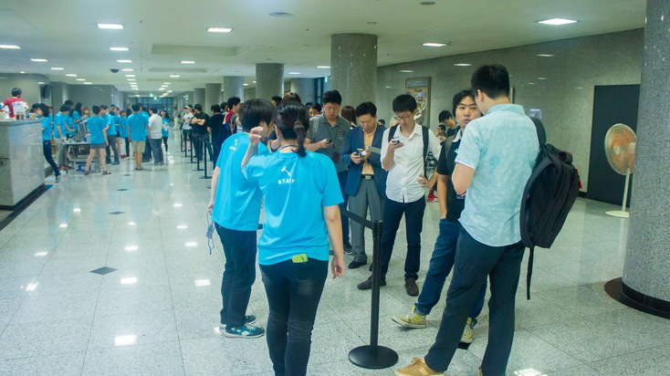
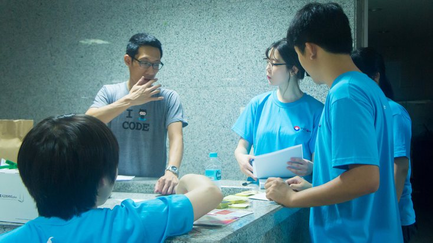
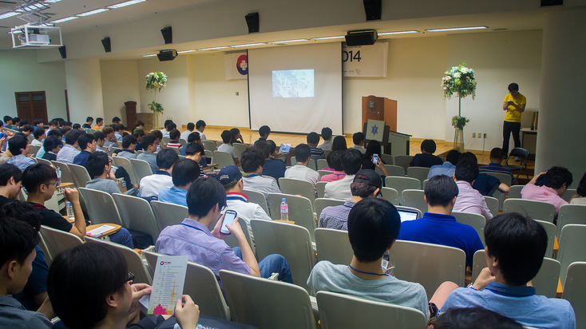
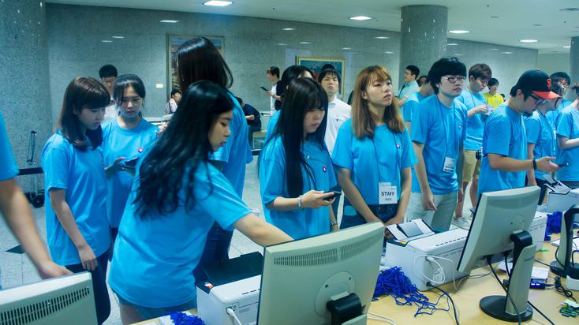
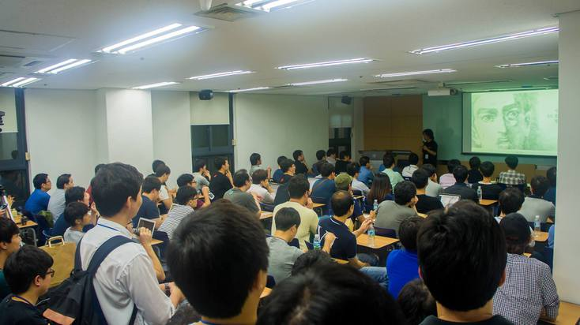
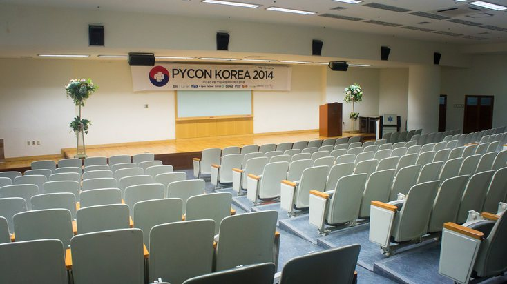

발표자 모집
행사개요
파이콘은 세계 각국의 파이썬 프로그래밍 언어 커뮤니티에서 주관하는 비영리 컨퍼런스입니다.
2014년, 한국에서 처음으로 개최한 파이콘 한국 2014를 시작으로 파이콘 한국 준비위원회는 건강한 국내 파이썬 생태계에 지속적인 보탬이 되고자, 커뮤니티 멤버들의 자발적인 봉사로 운영되고 있습니다. 작년보다 성숙된, 보다 알찬 모습으로 열릴 ‘파이콘 한국 2015’를 통해 새로운 기술과 정보를 공유하고 참석자들이 서로 교류할 수 있는 행사가 되기를 희망합니다.
- 일정 : 2015년 6월 27일(토) ~ 28일(일)
- 장소 : 서울 OO 대학교 OO 강당
- 인원 : 약 800명 예상
- 주최 : 파이콘 한국 준비 위원회
- 대상 : 국내 파이썬 개발자 / 관계자
발표자 지원
발표주제
파이썬에 대한 학술적 또는 상업적 프로젝트, 케이스 스터디 등 다양한 파이썬 관련 발표를 모집하고 있습니다. 제시된 주제는 예시이며, 이하의 내용으로 한정하는 것은 아닙니다.
파이썬 활용
- 웹 프로그래밍 (예: Django, Flask, Pyramid)
- 클라우드 컴퓨팅 / 네트웤 프로그래밍
- 시스템 관리와 보안
- 멀티미디어 / 애니메이션 / 컴퓨터 그래픽스
- 게임 / 사용자 인터페이스 프로그래밍
- 하드웨어 / 임베디드 시스템 디자인
- SciPy / Numpy
- 빅 데이터 / PyData, 데이터 수집과 추출, 기계 학습
- 생명정보학
- 애플리케이션 배포
파이썬 언어
- 패키징
- 프로그래밍 도구
- 파이썬 라이브러리와 확장
- 파이썬 구현체: IronPython, Jython, PyPy, Stackless 등
파이썬과 비지니스
- 애자일 개발과 프로젝트 운영
- 스타트업, 비지니스, 교육 등
입문자를 위한 다양한 파이썬 소개 세션
일정
- 2015. 2. 9 : 발표자 모집 오픈
- 2015. 4. 1 : 발표자 모집 마감
- 2015. 4. 2 ~ 5.1 : 발표자 심사
- 2015. 5. 2 : 심사 확정 발표
- 2015. 6. 20 : 발표자 준비 모임
발표자 혜택
- 전일(2일) 티켓 2장 제공
- 행사 당일 점심 및 발표자용 기념품 제공
안내
- 파이콘 한국은 한국의 파이썬 개발자들이 지식을 공유하고 만남을 갖기 위한 공유의 장입니다.
- 발표내용은 파이콘 한국의 품질을 유지하기 위하여 심사되고 보완될 수 있습니다.
- 발표자에 한해 주차 지원이 가능합니다.
- 각 세션의 발표시간은 50분 입니다. 발표 시간은 조정될 수 있습니다.
문의
- 이메일 : proposal at pycon dot kr
사용자 모임
2015년 2월 파이썬 사용자 세미나
한국 파이썬 사용자 모임에서는 파이콘 한국 2015의 튜토리얼 세션에 앞서, 2월 14일에 튜토리얼 세션의 미리보기를 진행합니다.
- 세미나 안내 (페이스북)
-
Django 101
정경업님 진행으로 간단한 블로그를 만들며 Django를 배워봅니다.
-
Python Data 101
김슬님 진행으로 IPython Notebook으로 데이터 분석하기를 배워봅니다.
2015 파이썬 후드 집업 공동구매
한국 파이썬 사용자 모임에서 파이썬 사용자 모임의 홍보를 위해 2015 파이썬 후드 집업을 공동구매합니다. (사진은 합성된 예시이며, 실제 결과물은 사진과 다소 다를 수 있습니다.)
이번에 제작될 후드집업 색상은 차콜그레이로 봄/가을용 후드로 제작할 예정이며, 지난해와 비교하여 기모안감이 빠져있으며, 특양면 후드 집업으로 제작될 예정입니다. 자세한 내용은 아래 신청 폼 페이지를 통해 확인하실 수 있습니다. (단, 한국내 배송만 가능합니다.)
- 공동구매 신청 (구글 폼)
- 신청기간: 2015. 2. 4 ~ 11
- 제작기간: 2015. 2. 12 ~ 18
- 배송기간: 2015. 2. 27 이후
그리고,
파이콘 한국 2014
PyCon Korea 2014는 2014년 8월 30일, 숙명여자대학교에서 450여명의 참석자와 20여개의 세션, 17명의 발표자와 함께 성황리에 종료되었습니다. 행사 준비와 진행을 위해 20명의 자원봉사자분들과 11명의 준비위원회 스태프가 노력하였습니다. 모두 감사합니다.

- 
- 
- 
- 
- 
- 